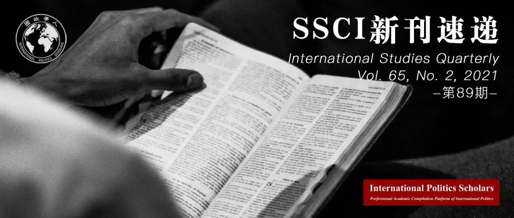

收录于合集 #新刊速递 123个

期刊简介
《国际研究季刊》（ International Studies Quarterly ）是国际研究协会的旗舰期刊，由牛津大学出版社每年发行四期，旨在发表与国际研究中重要理论性、实证性、规范性主题相关的领先学术成果。根据Journal Citation Reports的数据，2019年该期刊的影响因子为2.146。
本期编委
【编译】 张曼娜 吴天麟 李源 刘瑛琛 常佳艺
【校审】 刘瑛琛 常佳艺 吴天麟 李源 张曼娜
【排版】 韩心蕊
【美编】 臧泽华

本期目录
1.穿越时空：政治怀旧与中国丝绸之路的复兴
Spanning Thousands of Miles and Years: Political Nostalgia and China’s Revival of the Silk Road
2.国际关系中不确定性的决定因素
The Determinants of Uncertainty in International Relations
3.国际制度评级的金融性后果：竞争、合作与评价政治
The Financial Consequences of Rating International Institutions: Competition, Collaboration, and the Politics of Assessment
4. 跨国银行和国际货币基金组织的条件性
Multinational Banks and IMF Conditionality
5. 当内战遇上灾害：自然资源开采与反叛组织的韧性
When Disasters Hit Civil Wars: Natural Resource Exploitation and Rebel Group Resilience
01
穿越时空：政治怀旧与中国丝绸之路的复兴
【题目】 Spanning Thousands of Miles and Years: Political Nostalgia and China’s Revival of the Silk Road
【作者】 Lina Benabdallah，维克森林大学助理教授。
【摘要】 近十年来，国际关系研究越来越关注记忆（memory）、创伤（trauma）、羞耻（shame）的政治，但较少关注把过去的积极经验政治工具化。的确，国际关系理论鲜有涉及怀旧（nostalgia）的概念及其在外交政策制定中的地位，尽管它有可能提供一个强大的理论透镜来解释霸权力量的互动。站在时间和空间、时间和情感、过去和现在的交叉点上，政治怀旧允许国家领导人在时间上来回穿梭，回到过去，不是为了怀旧，而是为了对繁荣未来的承诺。本文考察了中国政府对古丝绸之路的怀旧式借用，以便将中国新的大战略、新丝绸之路与包容和繁荣的理念联系起来。重提15世纪中国航海家郑和的故事，通过骆驼商队穿越沙丘的故事和图像重建他的航海历史，便是政治怀旧的例证。
The study of international relations (IR) has paid increasing attention over the last decade or so to the politics of memory, trauma, shame, but to a less extent to the political instrumentalization of positive experiences of the past. Indeed, IR theory rarely engaged the concept of nostalgia and its place within foreign policy making despite its potential for providing a powerful theoretical lens to explain hegemonic power dynamics. Sitting at the intersection of time and space, of time and affect, and of past and present, political nostalgia enables state leaders to move back and forth in time bringing back the past not for the past’s sake but for the promise of a prosperous future. This article examines Chinese government’s nostalgic borrowings from the Ancient Silk Road in order to associate China’s new grand strategy, the New Silk Road to notions of inclusivity and prosperity. Reviving stories about fifteenth-century Chinese admiral Zheng He and reconstructing the history of his maritime navigations through stories and images of camel caravans crossing sand dunes are illustrations of political nostalgia.
【编译】 张曼娜
【校对】 吴天麟
【审核】 李源
02
国际关系中不确定性的决定因素
【题目】 The Determinants of Uncertainty in International Relations
【作者】 Jeffrey M. Kaplow, 威廉玛丽学院助理教授；Erik Gartzke，加利福尼亚大学圣迭戈分校教授。
【摘要】 军事力量的不确定性被广泛认为是国际冲突的一个重要决定因素，但国际关系研究却很少对不确定性的来源进行分析。哪些因素会影响行为体对军事能力评估的有效性？军事能力的不确定性何时被高估、何时被低估？本文分析了能够解释国际关系中不确定性来源的一系列因素，认为对军事能力评估的不确定性受到国家特性与整体战略环境的影响。通过分析可公开获取的国家军事能力评估，本文使用新的不确定性衡量标准来检验该观点。研究结果为那些将不确定性视为冲突关键原因的研究和面临评估他国军事能力的决策者提供了一系列新的启示。
Uncertainty about military power is widely considered an important determinant of international conflict, but research in international relations provides relatively little guidance about the origins of uncertainty. What factors influence the validity of actors’ assessments of military capabilities? When would one expect uncertainty about military capabilities to be particularly high, or especially low? We examine a series of factors capable of explaining the sources of uncertainty in international relations, positing that the uncertainty of assessments is a function of both characteristics of the state being assessed and the overall strategic environment. We test our theory using new measures of uncertainty that we derive from analyzing publicly available estimates of national military capabilities. Our findings offer a novel set of implications both for research that relies on uncertainty as a key cause of conflict and for policymakers faced with evaluating foreign military assessments.
【编译】 李源
【校对】 刘瑛琛
【审核】 常佳艺
03
国际制度评级的金融性后果：竞争、合作与评价政治
【题目】 The Financial Consequences of Rating International Institutions: Competition, Collaboration and the Politics of Assessment
【作者】 Ranjit Lall, 伦敦政治经济学院国际政治经济学专业助理教授。
【摘要】 过去的15年里，全球治理领域产生了一个显著的趋势：捐赠国创建了国际制度绩效的比较指标，以便更加有效地分配其资源。然而，有趣的是，并不是所有评分高的制度都获得了增加捐款的“奖励”，也不是所有评分不佳的制度都受到了资金削减或冻结的“惩罚”。作者认为，绩效指标的金融性影响取决于制度本身和制度环境中的行为体之间的关系。当机构受到更高程度的资源竞争或者是同国家内外的行为体有更加深入且广泛的行动联盟时，强效应就会产生。作者使用了混合方法（mixed- methods strategy）检验了这一主张，混合方法参考了许多原始资料，包括关键知情人采访和一个囊括了2000-2016年间53个机构的新数据集。这些发现深化了作者对什么时间以及为什么绩效指标会影响资源流向被评估者的理解。
The past 15 years have witnessed a striking trend in global governance: the creation of comparative indicators of the performance of international institutions by donor states seeking to allocate their resources more efficiently. Interestingly, however, not all highly rated institutions have been “rewarded” with increased contributions, while not all poorly rated institutions have been “punished” with funding cuts or freezes. I argue that the financial impact of performance indicators is contingent upon the relationship between institutions and other actors within their environment, with stronger effects occurring when institutions (1) are subject to a higher degree of resource competition and (2) possess deeper and more extensive operational alliances with actors above and below the state. I test the argument using a mixed-methods strategy that draws on a variety of original sources, including key informant interviews and a new dataset covering fifty- three institutions over the period 2000–2016. The findings enhance our understanding of when and why comparative performance indicators influence resource flows to assessed entities.
【编译】 刘瑛琛
【校对】 常佳艺
【审核】 吴天麟
04
跨国银行和国际货币基金组织的条件性
【题目】 Multinational Banks and IMF Conditionality
【作者】 Trung A. Dang，联合国内务监督事务厅分析员；Randall W. Stone，罗切斯特大学斯卡尔尼波兰和中欧研究中心主任。
【摘要】 作者发现，公司层面的证据表明，在那些接受了国际货币基金组织（以下简称为IMF）条件性的国家中美国的银行受到了优惠待遇。作者通过投资地点决策来推断企业对于未来利润的预期，并发现在那些接受了IMF条件性的国家中，美国公司收购当地金融公司的机率大概增加了53%。作者同时使用不附加金融条件性的IMF项目与其它领域的外国直接投资（FDI）为安慰剂检验（placebo test）。对于非美国公司的投资决定，IMF的金融条件性仅具有弱效应，这意味着此现象需政治经济学的解读。公司层面的数据显示，美国公司的独特行为并非是因为规模效应或美国企业的特定影响力，反而与美国在IMF内的影响力相关。虽然来自其它IMF主要股东国的公司也能获益，但相对于美国跨国银行而言，这一效应较弱。在与政治相关而且在投资国当地拥有分支的企业当中，这一效应尤为集中，这与公司游说以获得优惠待遇的解读一致。
We find firm-level evidence that US banks receive preferential treatment in countries under IMF conditionality. We rely on investment location decisions to infer firms’ expectations about future profits and find that US firms are approximately 53 percent more likely to acquire financial firms in countries under financial conditionality. IMF programs without financial conditionality and FDI in other sectors serve as placebo tests. Financial conditionality has weak effects on investment decisions by non-US firms, which implies a political-economy interpretation. Firm-level data indicate that the distinctive behaviour of US firms is not due to advantages of scale or to a US-firm fixed effect, but to US influence in the IMF. Firms from other major IMF shareholders benefit as well, but the effects are much weaker. The effects are concentrated in the politically relevant firms that have local affiliates, which is consistent with the interpretation that firms lobby for preferential treatment.
**
**
【编译】 吴天麟
【校对】 张曼娜
【审核】 刘瑛琛
05
当内战遇上灾害：自然资源开采与反叛组织的韧性
**
**
【题目】 When Disasters Hit Civil Wars: Natural Resource Exploitation and Rebel Group Resilience
【作者】 Yasutaka Tominaga, 日本法政大学国际经济学院副教授；Chia-yi Lee，台湾政治大学外交系副教授。
【摘要】 关于自然灾害与冲突间的关系，现有文献有着不同的观点。本文认为，自然灾害是否会损害反叛组织的韧性，取决于他们的资金来源和资源开采模式。从自然资源中获得资金的反叛组织更容易受到自然灾害的影响，因为这种资金来源很容易被快速发生的灾害所破坏。反叛组织如何利用自然资源财富也制约了自然灾害对反叛组织韧性的影响。依靠剥削资源进行生产的反叛组织，尽管有一个看似稳定的收入来源，但在严重的自然灾害发生后更有可能面临资金削减。相比之下，依靠走私自然资源的反叛组织，由于具有更高的灵活性和流动性，更有可能在自然灾害中生存下来。本文使用关于武装团体、自然灾害和叛军违禁品的数据来检验该论点，带有交互项的Logit模型的结果支持了本文假设。研究结果将环境冲突与资源诅咒相关的文献相联系，并提供了重要的政策借鉴意义。
Existing literature on the relationship between natural disasters and conflicts provides mixed findings. In this article, we argue that whether natural disasters hurt rebel group resilience depends on their funding source and the mode of resource extraction. Rebel groups that obtain their funding from natural resources are more susceptible to natural disasters because this funding source could be easily disrupted by rapid-onset disasters. How rebel groups exploit natural resource wealth also conditions the effect of natural disasters on rebel group resilience. Rebel groups that depend on extorting resource production, despite having a seemingly stable revenue stream, are more likely to face funding cuts after a severe natural disaster. In contrast, rebel groups that rely on smuggling natural resources, due to a higher level of flexibility and mobility, are more likely to survive natural disasters. We test our arguments using data on armed groups, natural disasters, and rebel contraband, and the results of the logit models with interaction terms support our hypotheses. Our findings bridge the environmental conflict literature and the resource curse literature, and offer important policy implications.
**
**
【编译】 常佳艺
【校对】 李源
【审核】 张曼娜
好好学习，天天“在看”
国政学人
支持学术公益与知识传播
微信扫一扫赞赏作者 __赞赏
已喜欢，对作者说句悄悄话
取消 __
发送给作者
发送
最多40字，当前共字
上一页 1/3 下一页
长按二维码向我转账
支持学术公益与知识传播
受苹果公司新规定影响，微信 iOS 版的赞赏功能被关闭，可通过二维码转账支持公众号。